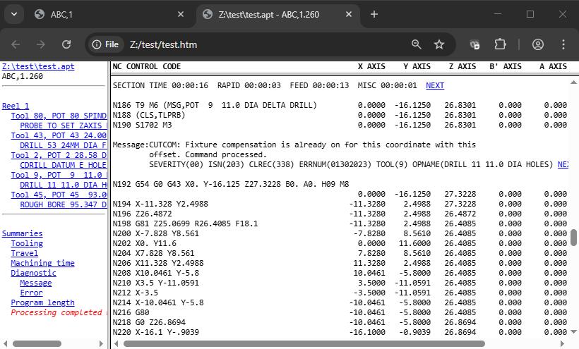

GENER Inputs and Outputs
GENER uses the information about the NC machine to convert the points and vectors of a cutter location (CL) file into the joint locations and machine codes of an NC control tape file.
{kind=link}
Overview of Inputs and Outputs of the GENER Module
Once the tool path (i.e., CL file) is ready, it is time to convert the instructions to the format required by your NC machine. This machine specific format is sometimes called tape code or NC tape, which refers to the original 8-track paper (mylar) tape format used to transfer programs to the NC machine. It is now more commonly referred to as the NC control program, or just NC program. GENER is the module that makes this transformation.
GENER requires the name of the file containing the tool path data and the name of the post-processor to use to make the transformation. One post-processor is required for each NC machine or group of identical machines. Additional post-processors can be created for specialized purposes (e.g., a post-processor for foam program prove-out might adjust the spindle and feed and omit coolant). Icam Post comes preconfigured to run all of the more popular controllers, so you can easily create a post-processor to see how things work without actually having to go into the details.
Input CL File
The input CL file must be in one of the formats:
CAM system APT-like source files
ICAM binary CL files
ISO source CL files
ICAM supported CAM system binary CL files (a licensed option)
An APT-like source file generated by a CAM system can be viewed using a regular editor, or printed to hard copy. GENER is able to support most CAM system source CL and binary CL output formats. Interface kits are available to convert problem statements and commands into a format understandable by GENER. A sample of an APT-like source file follows:
PARTNO/'APT SOURCE SAMPLE' RAPID FROM/0.0000,0.0000,6.0000 LOAD/TOOL,1 SPINDL/600.0,RPM,CLW RAPID GOTO/1.0000,0.0000,0.0000 … … FINI
Binary CL files created by ICAM’s CAM-APT-SURF, CAD-APT and IXCL products can be directly input to GENER by selecting the ICAM interface kit. Binary files cannot be viewed using an editor nor printed to hard copy. In many cases, binary CL files created with other CAM software can also be directly input to GENER by selecting the appropriate interface kit. The ability to process binary CL files from other vendors is available as a licensed option.
The ISO TC184/SC1/WG4 committee has standardized an ASCII CL file format. An ISO 3592:2000 CL file can be viewed using a regular editor, or printed to hard copy. An ISO source file containing the same records as the APT example above would look as follows:
1,2000,1045,'APT SOURCE SAMPLE'; 2,2000,5; 3,5000,3,'NONAME',0,.,.,6.; 4,2000,1055,1.; 5,2000,1031,600.,78,60; 6,2000,5; 7,5000,5,'NONAME',0,1.,.,.; … … 406,14000,0; :
Output NC Program File
The output NC program data is in 8-bit no-parity ASCII format.
By default the tape file will be created with the same name as the CL file, with an extension of tap. Two tape files may be created for 4-axis lathes, in which case the second file name is the same as the first, with a file extension of tp2.
Additional tape files may be created to hold NC subprograms. The QUEST “Optional post-processor Words / The CALSUB Command” section questions #4 and #4.2 define how subprograms are written.
Subprogram placement at End or where Defined: GENER will output subprograms to the same tape file as the main program.
Subprograms together in a separate file: GENER will output all subprograms together in a single file, having the same path and name as the main tape file, with a file extension as defined in question #4.1 (default is tps). The subprogram tape file extension can be changed using the $SUBEXT macro variable.
Subprograms each in a separate file: GENER will output each subprogram to its own file, having the same path and name as the main tape file, with the subprogram ID appended in the form “_id” and with a file extension as described above.
The icam_tap environment variable (see “Environment Variables”) can be set to define the default directory where GENER will write all tape files. The file_ext_tape, file_ext_tape2 and file_ext_sub DEF file symbols can be set to change the tape file extension defaults (see here).
The NC program file can be created as a tape file or a DNC file.
A tape file has three sections. They are the leader, the program data and the trailer. Both the leader and the trailer may contain “man readable” information. Man readable data is only readable when the tape is actually punched out on 8 track paper/mylar tape. They will appear as large characters formed by perforations in the punched tape. Different characters sequences are used depending on which tape format (ASCII,EIA) was selected in the QUEST “General Description / Output Format” section.
The NC program file can also be written in a DNC format where leaders, trailers and man readable data are not required.
The record format of NC control files can be controlled using options in the definition file. Separate sets of options can be defined for tape and DNC type outputs. These options can control the record formatting, record separator characters, sequence identifiers and record length identifiers (see dnc_ definitions starting here and tape_ definitions starting here).
It should be noted that QUEST options concerning the format of the verification listing have no effect on the NC control tape file generated.
Output Verification Listing
The post-processor listing file contains the complete program listing, including timing data, diagnostics, tape listing, operator messages, etc. These, along with many other format details, are controlled from within the “Display Format” section of QUEST. Two output formats are supported: standard and HTML. The format can be controlled by the use_html_nclist definition file symbol (see here). The generation of the listing file is optional, but if disabled then a log file will be generated instead (see “Output Log File”). The /list and /nolist command line options control the generation of the listing file.
HTML Listing Format
{kind=link}
With HTML format, the post-processor listing is contained within four files.
The main file (e.g., test.htm) organizes the layout of the screen using the <frameset> feature available on most browsers. This file includes links to three other files:
One of the three files contains the complete verification listing (e.g., test_list.htm) shown on the right-hand side of the window, which is also suitable for viewing or printing on its own. The listing file contains its own navigation links from tooling and diagnostic summaries to the first occurrence of that particular tool or diagnostic. As well, diagnostic messages and section time summaries both include a NEXT hypertext link, that links you to the next diagnostic or section.
A second file (e.g., test_nav.htm) displays the navigator window shown on the left-hand side of the window, which can be used to quickly jump from one part of the listing to another. The navigator lists tools in the order that they are loaded. The navigator also provides links to each program summary available in the listing. The last line of the navigator shows the completion status.
The third file (e.g., test_head.htm) displays the column headings for easy reference (HTML files are not paginated so the column headers only occur at the start of the program and at tape breaks).
The icam_lst environment variable (see “Environment Variables”) can be set to define the default directory where GENER will write all verification listing files. The html_ext_nclist DEF file symbol can be set to change the verification listing file extension default (see here).
Standard Listing Format
The standard listing format can use one of two carriage-control forms: FCC and list. The choice is controlled by the page_format definition file symbol. The FCC form, which stands for Fortran
Carriage Control, reserves the first character of each line for page formatting purposes. GENER will output: a 1 in this position to advance to a new page; a 0 to double space an output line; and a blank for regular single spacing. An FCC formatted file should only be printed on a printer or driver recognizing FCC output. The list form does not reserve a character for carriage control. Instead, a form-feed character is output at the start of a record to advance to a new page. All other records are output one per line.
The page length is set in the definitions file using the lines_per_page variable.
The icam_lst environment variable (see “Environment Variables”) can be set to define the default directory where GENER will write all verification listing files. The file_ext_nclist DEF file symbol can be set to change the verification listing file extension default (see here).
Identification Page
When GENER is run, an unnumbered identification page is output for control purposes. This page identifies the GENER software version and modification level, the name of the input CL and output tape files, the post-processor and Virtual Machine model (if used), interface kit settings, license options and program identification string (commonly called a PID). For example:
ICAM Technologies Corporation (c) Copyright 2025 Icam Post GENER Version 26.0-2506 Build 30984 win64 ICAM_LIB: C:\Program Files\ICAM\V26 ICAM_APPDATA: C:\ProgramData\ICAM\260 INPUT: F:\test\test.apt OUTPUT: F:\test\test.tap POST: ABC,1.260;3, Created 10-Jan-2025 10:43:00.88 DATABASE: C:\ProgramData\ICAM\260\work\campost.dbf DEF: C:\ProgramData\ICAM\260\ICAM.DEF KIT: 3DEXPERIENCE INSERT: C:\Program Files\ICAM\V26\kit\3DEXPERIENCE\insert.apt MADEF: C:\Program Files\ICAM\V26\kit\3DEXPERIENCE\kit.mac WORDS: C:\Program Files\ICAM\V26\kit\3DEXPERIENCE\words.dat LICENSE: p5,xaf PID: 9001
This header page shows that version 26.0 (i.e., V26) mod-level 2506 (i.e., week 06 of 2025) build number 30984 of GENER is being run on a win64 (i.e., 64-bit Windows) platform. This information must be referenced when communicating problems to ICAM support personnel. The ICAM_LIB and ICAM_APPDATA identify these two key directories, which contain installed and user customized files.
The input CL file is F:\test\test.apt and the output tape file is F:\test\test.tap.
The POST and DATABASE entries identify the post-processor being used and the database the post-processor was loaded from. The post-processor name “ABC,1.260;3” identifies the post name as “ABC,1”, third revision stored in the database (i.e., ;3 ), created using version 26.0 of QUEST (i.e., .260). The creation date lists the date and time that the post-processor was last generated. When using composite post-processors, all post component names will be listed. When using Virtual Machine, the model name, model database and the verification setup file (.vsw) will also be listed.
The entries between DEF and WORDS identify the various files used to handle interface details between GENER and the CAM system format used in the input CL file. DEF identifies the master definitions file (see “The ICAM Configuration Utility”). KIT identifies the interface kit being used, if any. INSERT identifies additional aptsource commands that will be processed at the start, before reading the input CL file. MBDEF and MADEF list external macro files included into the post at run-time. Lastly, WORDS is a file containing the list of non-standard Major and Minor keywords and their associated codes.
The LICENSE entry lists the run-time license in use along with any other optional licenses that were checked-out at the start of processing. Licenses that are dynamically checked out during processing will not be listed here.
A PID (i.e., process id) string was specified when GENER was executed, or a default PID string was defined by the post-processor creator (using QUEST). In either case, the value written to the NC control file is “9001”.
If user parameters are included on the GENER command line, then a UPARAM entry will list them.
The NC Control Tape Listing
The GENER verification file always contains an NC control tape listing. This is provided as a reference for the NC machine operator. The tape listing is an exact copy of what will appear on the tape file except that man readable data is omitted. The verification file may also contain status information listed in column format beside the NC control tape.
The width and length of pages can be controlled. The width of a page is controlled in QUEST. The length of the page can be set using the lines_per_page symbol in the definition file.
Title Block
The title block occupies the top portion of each page, displaying: the page number; run date; post-processor name; PARTNO string; and on the first page only, the post-processor title.
Occasionally instead of a PARTNO string, the text “Undefined PARTNO” will appear. This happens when a PARTNO command is not found within the first 20 records of the CL file.
Display Data
The NC control tape data (as it would appear in the tape file) is located at the left hand side of each page. A single block is output at a time. Non-printing characters are replaced by the “$” character so as to not interfere with the printer, however the tape file will contain the true characters.
The right hand side of each page may contain status information in column format. The appearance of this information is controlled by responses in the “General Description / Display Format” section of QUEST. A header appears above each status column. Descriptions of the various status types follow:
nnAXIS
Displays the position of the named axis, in normalized machine coordinates, at the end of the NC command block.
Linear axes are output in machine units using the right hand rule (i.e., reversed axes are output with a normal sign convention). Primary linear axes are identified in the header by X, Y and Z; secondary linear axes by U, V and W; and the extending axis by E.
Rotary axes values are output in degrees regardless of the actual units used by the machine. Sign conventions follow the right hand rule. Rotary head axes are identified by A, B and C; rotary tables by A', B' and C'; and the nutating axes by N and N2. Rotary axis positions shown in the display are actual positions and may not match the tape output where values of 360 degrees or greater occur.
If there is not enough space to display all axes in unique status columns, GENER will use the same column for similar axes (i.e., Z, W and E) outputting 2 or 3 lines of status information for each NC command block. The first line of linear axes lists primary axes; the second line lists secondary axes; the third lists the extending axis under the Z axis column. The first line of rotaries lists the head axes; the second line lists the table axes; the nutating axes always appear in their own column.
TIP VEL
Displays the calculated velocity of the cutting tool with respect to the part coordinate system (not available for punch presses). Normally this value will match the requested feed rate in the CL file. A value of zero is output on blocks that do not contain motion instructions.
RPM
Displays the calculated revolutions per minute of the spindle at the end of the NC command (not available for punch presses, EDM and contouring machines). A value of zero is output when the spindle is stopped. Negative values can indicate CCLW rotation if the post-processor creator specifically requested this feature.
TIME
Displays the elapsed machining time in hh:mm:ss (absolute) format or the delta block time in mmm:ss.ss (incremental) format.
nnnn ACT
Displays the actual machining time in absolute or incremental format for the MAIN and SIDE heads of a 4-axis merging lathe. Actual machining time does not include the time spent waiting for a synchronization event.
CL
Displays the number of the CL record that resulted in the NC instruction block being output. This provides a cross reference between CL records and NC commands. A value of zero is used during startup processing.
ISN
Displays the Internal Sequence Number of the APT statement that created the CL records that resulted in the NC instruction block being output. This provides a cross reference between the original APT program statements and NC commands. A value of zero is used during startup processing and also when information concerning ISN numbers is not provided in the CL file.
HITS
Displays the number of hits per tape block. This column is available for punch press machines only.
Summary Data
The appearance of summary information in the listing file is at the discretion of the post-processor author. A short one-line section summary may be output at each tool change and break point. A page summary may appear at the bottom of each page. An NC program summary may be found at the end of the verification listing. An interim program summary may also be provided for each reel in a multi-reel program. These include tooling, machine travel, machining time and diagnostic summaries.
Section Summary
The section summary is output before each tool change, at each program break point and at the end of the program. It is a one line entry that lists the elapsed time, rapid positioning time, feed interpolation time, miscellaneous time and idle time (for merging lathes) since the previous section summary. Times are listed in hh:mm:ss format.
When using the HTML form of list output, each section summary contains a hot-link to the next section summary in the program. The last section summary hot-link points back to the first one in the program.
Page Summary
The page summary lists the accumulated tape length and machining time. Tape length is output in feet, meters or kilobytes, depending on the post-processor units and output format. The reel number is also included where applicable. Machining time is in hh:mm:ss format.
Only a single page summary is output when using the HTML form of list output, since HTML files are not paginated.
Tooling Summary
The tooling summary supports up to five independent automatic tool changers (ATC) on a single milling or turning machine. For each ATC the summary lists all tools that have been loaded. Information for each tool includes identity number, pocket number, diameter, length, gripper size, diameter and length compensation switch numbers, minimum and maximum feeds, as well as feed, rapid, miscellaneous and total times. Punch presses have a nibble and punching summary for each tool along with the machining times.
For listings with a width of 132 columns or wider, all information for each tool is listed on a single line. For narrower listings, the tool timing information is output in a second table following the first.
When using the HTML form of list output, the tool number in the tool summary is a hot-link to the first load of that in the current reel or program.
Tool Flute Length Summary
The tool flute length summary lists the nominal (i.e., as defined) and maximum flute length for each tool in machine units, along with the VM (Virtual Machine) time when the maximum length was first reached. Tools that exceed their nominal flute lengths are flagged with an asterisk (*).
This summary is only available when material removal simulation (MRS) is active and flute length optimization is enabled either via the VM ADAPTV command or from the Simulation»Options menu MRS tab settings. MRS requires an add-on xmr260 license option.
For example:
TOOL FLUTE LENGTH SUMMARY: POCKET TOOL-ID NOMINAL MAXIMUM VM-TIME 5 NA 1.0000 0.5906 00:00:03 6 NA 0.5000 0.9724 00:03:00 *
Tool Travel Summary
The tool travel summary lists the minimum, maximum, total and accumulated travel for all axes. The total travel for each axis is the difference between the minimum and maximum travel values and can be used to help determine where to place the actual part on the machine bed. The tool travel is with respect to the machine coordinate system in effect at the end of the program (or reel). The machine coordinate system can be controlled using the ORIGIN, TRANS and LOCATE post-processor commands. The accumulated travel tracks the total motion of each axis.
For example, the travel summary for a mill-turn lathe might be:
TOOL TRAVEL SUMMARY: AXIS MINIMUM MAXIMUM TOTAL ACCUM X 0.3000 4.0000 3.7000 80.7000 Z -12.5000 16.0000 28.5000 416.5000 C -450.000 135.000 585.000 24562.040
Linear axis travels are in machine units. Rotary axis values are in degrees.
Machining Time Summary
The machining time summary lists, in hh:mm:ss format, the time spent positioning, cutting and on miscellaneous operations. For for merging lathes, the summary also includes the time spent at idle and the times for both heads are listed independently.
In the following example, the total time spent at feed was 2 hours 6 minutes and 24 seconds. This accounted for over 98% of the total machining time.
MACHINING TIME SUMMARY: TYPE HH:MM:SS PERCENT RAPID 00:01:11 1.709 FEED 02:06:24 98.338 MISC 00:00:57 0.739 TOTAL 02:08:32
Note that for punch presses, the RAPID and FEED lines are replaced by POSITIONING and PUNCHING.
Diagnostic Summary
There two types of diagnostic summary, either or both of which can appear, controlled by answers in QUEST.
The basic summary lists the number of diagnostics that have occurred in each message class. If no diagnostics have occurred, the summary will state that fact. There are four classifications of diagnostics: Messages are informational only; warnings indicate problems that have been corrected automatically; errors are problems that cannot be corrected and that will probably result in an unusable NC control tape; fatal errors indicate severe problems.
In the following example, 3 warnings and 2 errors have occurred. There were no informational messages nor were there fatal errors.
DIAGNOSTIC SUMMARY: TYPE TOTAL MESSAGE 0 WARNING 3 ERROR 2 FATAL 0 TOTAL 5
The detailed summary lists by message category, a compilation of all diagnostics that have occurred in the program. For each diagnostic type, a count of the number of occurrences and a page reference of the first occurrence is given.
When using the HTML form of list output, each line of the basic diagnostic summary table contains a hot-link to the first diagnostic of that type. The detailed summary contains hot-links to the first occurrence of each listed diagnostic. Diagnostic messages themselves contain hot-links to the next sequential diagnostic in the program.
Output Log File
The post-processor log file contains the first page from the listing file and the final program summary data. The generation of the log file is optional, but if disabled then a listing file will be generated instead (see “Output Verification Listing”). The /ef command line option controls the generation of the log file.
The icam_lst environment variable (see “Environment Variables”) can be set to define the default directory where GENER will write all verification listing files, including the log file. The file_ext_log DEF file symbol can be set to change the log file extension default (see here).
Output Review File
If the “Save for review” launch panel preference is selected or the /save command line option is specified, then GENER and CERUN will save their results at the end of processing into a file having the same name as the listing, but with a file type of zrj.
To review an NC program’s results, drag and drop the zrj file onto the launch panel or desktop icon (or open the results using the JOB button), then press OK. The Full interface will be activated showing the results at the end of GENER or CERUN processing. These include:
Input, Output (GENER only) and Console window complete traces
Source window listing the input file
Diagnostic window listing all diagnostics
Virtual Machine simulation windows
Controller window including Time Line access to entire program
Material removal simulation in-process stock final state
View Listing and View NC code menu selections
The save-for-review function allows, for example, a program to be run in background mode and then later opened for more detailed review if necessary. The zrj file contains sufficient information to allow a program to be rewound and reprocessed if desired (although this is not recommended for production programs).
Output Backplot File
The post-processor plot file can be in one of two formats: binary or APT source. The format is determined by the plot_type symbol in the ICAM.DEF file. The output units of the file can also be in one of two formats: machine or CL. The units are determined by the plot_data definition file symbol. With machine units, the XYZ coordinates represent the machine system coordinates of the tool tip. Rotary information is not available. With CL units, the XYZ coordinates represent the tool tip in the CL reference system, which includes MULTAX type data if there are rotary axis movements.
The plot file is only created if the input CL file contains PLOT commands and the site license includes the pl4 plotting option. By default the file will be created in the current directory (i.e., the one you were in when you issued the GENER command) with the same name as the CL file, with an extension of bkp. This default can be changed using the plot option on the command line.